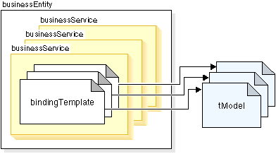
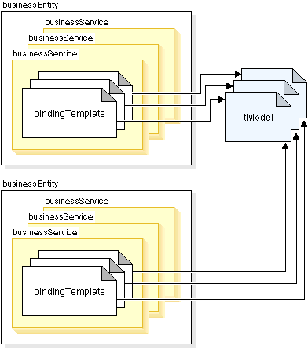

Once you have registered and logged in to the UDDI registry that you want to use, you can register your Web service. Registration of a service involves four core data structure types: business information, service information, binding information, and information describing the specifications for services. The relationship between these data types is described in Figure 1.
Business information. Information that is contained in a businessEntity structure. The businessEntity contains information about the business that has published the service, such as business name, description, contacts and identifiers.
Service information. Information that describes a group of Web services. It is contained in a businessService structure. The businessService contains information about families of technical services. It groups a set of Web services related to either a business process or group of services.
Binding information. Information represented by the bindingTemplate structure. The bindingTemplate holds technical information for determining the entry point and construction specifications for invoking a Web service. The bindingTemplate provides the Web service descriptions relevant for application developers that want to find and invoke a Web service. The bindingTemplate points to a service implementation descriptions, for example via a URL.
Information describing the specifications for services. Metadata about the various specifications implemented by a given Web service represented by the tModel. The tModel provides a reference system to assist in the discovery of Web services.
Figure 1. Relationship between data types.

Each child structure has a unique parent structure. This means that each businessService structure is owned by a specific businessEntity. In turn, each bindingTemplate is owned by a specific businessService. Each bindingTemplate structure references to unique instances of tModel structures; however, since references can be repeated within several parent structures, there can be many references to tModels from different Entity-Service-Template parents, as seen in Figure 2.
Figure 2. References to tModel.

A publisher assertion is a way in UDDI to associate businessEntity structures. The publisher assertion defines a group of businessEntity structures. Many businesses are not effectively represented by a single businessEntity. A publisher assertion allows for the association between businessEntity structures. For example, a large company may have several subsidiaries that have different descriptions but are still closely coupled and want to make their relationships visible in UDDI registries.
A service projection enables a business entity to reference a service that was published by another business entity. By using the businessService structure as a projection to an already published businessService, businesses can share or reuse services. Service projections are managed centrally as part of the referencing businessEntity. This means that any changes made to the businessService by any of the referencing businessEntity structures are valid for all of the referencing businessEntity structures.